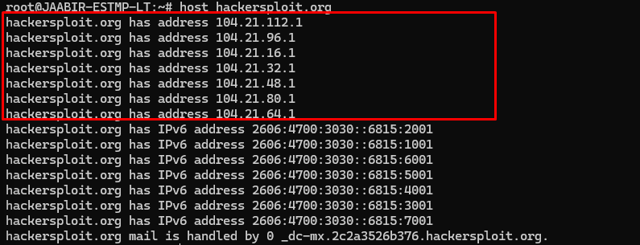

Information Gathering/Recon
whatis host
host hackersploit.org

thes are the proxies too
so we have a mail server too
hackersploit.org/robots.txt
Example:
https://unredacted.com/robots.txt
search engines are directed to use the urls to not exposed to it.
https://unredacted.com

we can use the Builtwith, wappalyzer in mozilla firefox to check what are the technologies are there etc.
the KALI LINUX Command:
WhatWeb